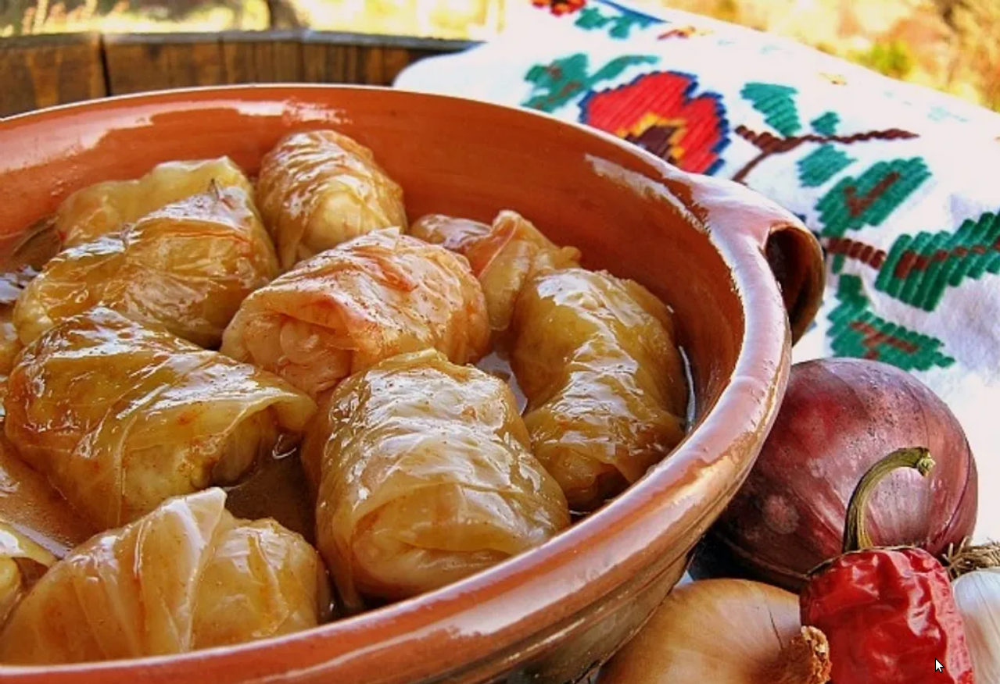

Najukusnije Sarme molim lepo
Back to all recipes

Description
Ljubitelji ovog jela kažu da sarmu mogu da jedu deset dana zaredom. Sarma je nakon što se skuva, sve ukusnija kako dani prolaze, ali i svaki put kada se podgreje. Nije ni čudo što je sarma postala gotovo obavezno jelo kad god je u Srbiji tradicionalna proslava i nešto što ne smete propustiti. Ispratite naš recept i pripremite najukusniju sarmu do sada.
Ingredients
- 300g suvo meso po izboru (Slanina, Rebarca, Kobasica )
- 800g Mešanog mlevenog mesa
- 150g Pirinča
- 12 Listova kiselog kupusa
- 600ml Pelata ili soka od paradajza
- 2 Glavice crnog luka
- 15g Aleve paprike
- 5g So/Biber
- 75g Brašna
- Ulje po potrebi
Recept je za 4 osobe
Recept
- Priprema aparature:
Nož za pripremu sastojaka
Dublji tiganj ili šerpa (za zapršku)
- Iseći crni luk na sitne kockice.
- Iseći listove kupusa i ukloniti zadebljanja.
- Izdinstati crni luk
- Dodati mleveno meso u prodinstan luk, i sa varjačom odvajati meso, kako ne bi ostalo većih komada mlevenog mesa.
- Dinstati meso par minuta, zatim dodati pelat (ukoliko u pelatu ima komada paradajza iseći ih na sitne komade pre dodavanja) ili sok od paradajza.
- Dodati so, biber i alevu papriku.
- Zatim dodati vode i mešati kako bi se sve sjedinilo.
- Ukuvati i sjediniti sve sastojke otprilike 10-ak minuta.
- Zatim dodati pirinač i ostaviti da se kuva još nekih 10-ak minuta (Pazite da ne prekuvate pirinač, on se završava dok se budu kuvala sarma).
- etc.